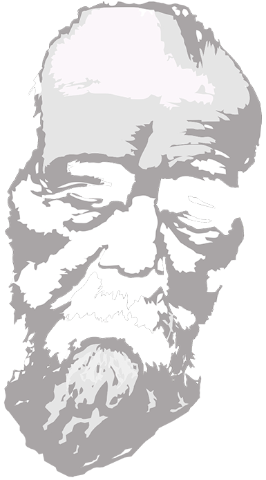
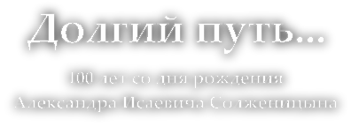
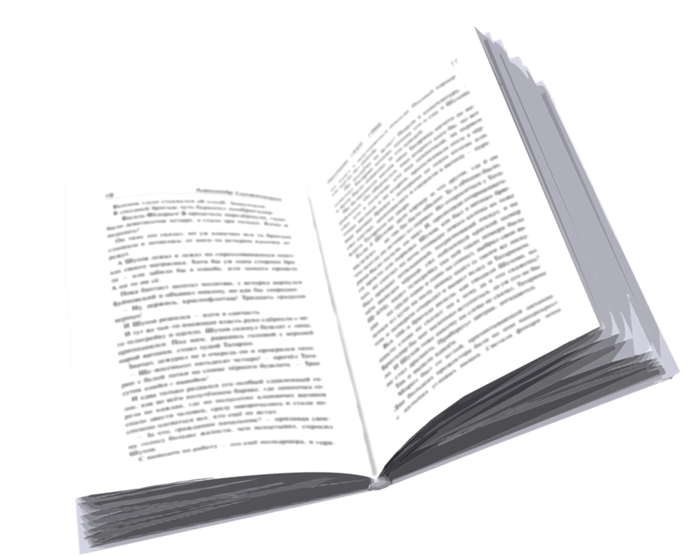
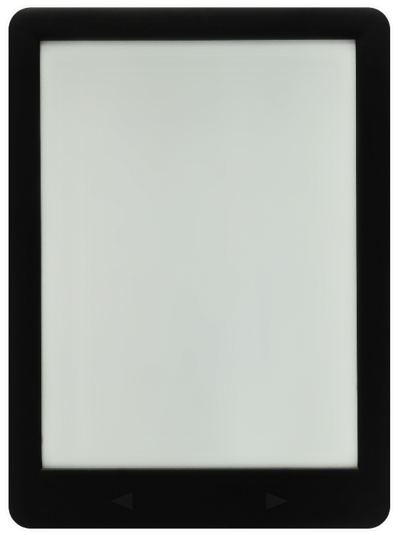
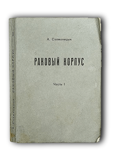
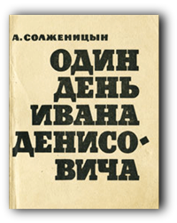
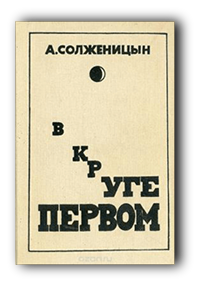
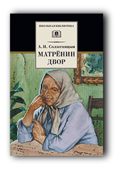
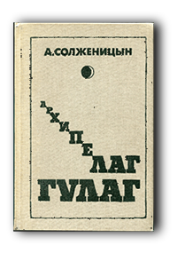

Детство и университеты Александр Исаевич (Исаакиевич) Солженицын родился 11 декабря 1918 года в Кисловодске (ныне Ставропольский край). Крещён в кисловодском храме Святого Целителя Пантелеймона. Отец — Исаакий Семёнович Солженицын (1891—1918), русский крестьянин с Северного Кавказа. Мать — Таисия Захаровна Щербак, украинка, дочь хозяина богатейшей на Кубани таврического чабана-батрака. Родители Солженицына познакомились во время обучения в Москве и вскоре поженились. Исаакий Солженицын во время Первой мировой войны пошёл на фронт добровольцем и был офицером. Он погиб до рождения сына, 15 июня 1918 года, уже после демобилизации в результате несчастного случая на охоте. В результате революции в 1917 году и Гражданской войны семья была разорена и в 1924 году Солженицын переехал с матерью в Ростов-на-Дону. С 1926 по 1936 год учился в школе № 15 (Малевича), располагавшейся в Соборном переулке. Жили в бедности. В младших классах подвергался насмешкам за ношение крестильного крестика и нежелание вступать в пионеры. Под влиянием школы принял коммунистическую идеологию, в 1936 году вступил в комсомол. В старших классах увлёкся литературой, начал писать эссе и стихотворения; интересовался историей, общественной жизнью. В 1937 году задумал большой роман о революции 1917 года. В 1936 году поступил в Ростовский государственный университет. Не желая делать литературу основной специальностью, выбрал физико-математический факультет. По воспоминанию школьного и университетского друга, «… учился на математика не столько по призванию, сколько потому, что на физмате были исключительно образованные и очень интересные преподаватели». Одним из них был Д. Д. Мордухай-Болтовской. В университете Солженицын учился на «отлично» (сталинский стипендиат), продолжал литературные упражнения, в дополнение к университетским занятиям самостоятельно изучал историю и марксизм-ленинизм. Окончил университет в 1941 году с отличием, ему была присвоена квалификация научного работника II разряда в области математики и преподавателя. Деканат рекомендовал его на должность ассистента вуза или аспиранта. С самого начала литературной деятельности остро интересовался историей. Первой мировой войны и революции. В 1937 году начал собирать материалы по «Самсоновской катастрофе», написал первые главы «Августа Четырнадцатого». Интересовался театром, летом 1938 года пытался сдать экзамены в театральную школу Ю. А. Завадского, но неудачно. В 1939 году поступил на заочное отделение факультета литературы Института философии, литературы и истории в Москве. В августе 1939 года совершил с друзьями путешествие на байдарке по Волге. Жизнь писателя с этого времени и до апреля 1945 года описана им в автобиографической поэме «Дороженька» (1947—1952). 27 апреля 1940 г. женился на Наталье Решетовской.
Война и арест С началом Великой Отечественной войны Солженицын не был сразу мобилизован, поскольку был признан «ограниченно годным» по здоровью. Активно добивался призыва на фронт. В сентябре 1941 года вместе с женой получил распределение школьным учителем в Морозовск Ростовской области, однако уже 18 октября был призван Морозовским районным военным комиссариатом и определён ездовым в 74-й транспортно-гужевой батальон. События лета 1941 — весны 1942 года описаны Солженицыным в неоконченной повести «Люби революцию» (1948). Добивался направления в военное училище, в апреле 1942 года был направлен в артиллерийское училище в Кострому в ноябре 1942 года выпущен лейтенантом, направлен в Саранск в запасной артиллерийский разведывательный полк по формированию дивизионов артиллерийской инструментальной разведки. В действующей армии с марта 1943 года. Служил командиром на Центральном и Брянском фронтах. Приказом Военного совета от 10 августа 1943 года лейтенант Солженицын награждён орденом Отечественной войны 2-й степени за выявление основной группировки артиллерии противника на участке Малиновец — Сетуха — Большой Малиновец и выявление трёх замаскированных батарей, впоследствии уничтоженных. 15 сентября 1943 года присвоено звание старшего лейтенанта. С весны 1944 года командир батареи Белорусского фронта. Боевой путь — от Орла до Восточной Пруссии. С 7 мая 1944 года — капитан. Приказом от 8 июля 1944 года был награждён орденом Красной Звезды за звуковое обнаружение двух неприятельских батарей и корректировку огня по ним, что привело к подавлению их огня. На фронте, несмотря на строжайший запрет, вёл дневник. Много писал, отправлял свои произведения московским литераторам для рецензии. Интересовался общественной жизнью, но стал критически относиться к Сталину (за «искажение ленинизма»); в письмах старому другу Николаю Виткевичу ругательно высказывался о «Пахане», под которым угадывался Сталин, хранил в личных вещах составленную вместе с Виткевичем «резолюцию», в которой сравнивал сталинские порядки с крепостным правом и говорил о создании после войны «организации» для восстановления так называемых «ленинских» норм. Письма вызвали подозрение военной цензуры . 2 февраля 1945 года последовало телеграфное распоряжение о немедленном аресте Солженицына и доставке его в Москву, где армейской контрразведкой начато следственное дело. А 9 февраля Солженицын в помещении штаба подразделения был арестован, лишён воинского звания капитана, а затем отправлен в Москву, в Лубянскую тюрьму. Допросы продолжались с февраля по май 1945 года, а 6 июня составлено обвинительное заключение, которое было 8 июня утверждено комиссаром госбезоасности. Солженицын заочно приговорён Особым совещанием к 8 годам исправительно-трудовых лагерей и вечной ссылке по окончании срока заключения. В августе был направлен в лагерь Новый Иерусалим, 9 сентября 1945 года переведён в лагерь в Москве, заключённые которого занимались строительством жилых домов на Калужской заставе (сейчас — площадь Гагарина) В июне 1946 года переведён в систему спец тюрем, в феврале 1947 года, — на «шарашку» в Загорск, 9 июля 1947 года — в аналогичное заведение в Марфине (на северной окраине Москвы). Там он работал по специальности — математиком. В Марфине Солженицын начал работу над автобиографической поэмой «Дороженька» и повестью «Люби революцию», которая задумывалась как прозаическое продолжение «Дороженьки». Позднее последние дни на Марфинской шарашке описаны Солженицыным в романе «В круге первом», где сам он выведен под именем Глеба Нержина, а его сокамерники Дмитрий Панин и Лев Копелев — Дмитрия Сологдина и Льва Рубина. В декабре 1948 года жена заочно развелась с Солженицыным. 19 мая 1950 года Солженицын из-за размолвки с начальством «шарашки» был этапирован в Бутырскую тюрьму, откуда в августе был направлен в Степлаг — в особый лагерь в Экибастузе. Почти треть своего срока заключения — с августа 1950 по февраль 1953 года — Александр Исаевич отбывал на севере Казахстана. В лагере был на общих работах, некоторое время — бригадиром, участвовал в забастовке. Позднее лагерная жизнь получит литературное воплощение в рассказе «Один день Ивана Денисовича», а забастовка заключённых — в киносценарии «Знают истину танки». Зимой 1952 года у Солженицына обнаружили семиному, он был прооперирован в лагере. Освобождён 13 февраля 1953 года. В заключении Солженицын полностью разочаровался в марксизме, со временем склонился к православно-патриотическим идеям. Уже в «шарашке» снова стал писать. После освобождения Солженицын был отправлен в ссылку на поселение «навечно» (село Берлик Коктерекского района Джамбульской области, Южный Казахстан). Работал учителем математики и физики в 8—10-м классах местной средней школы имени Кирова. К концу 1953 года здоровье резко ухудшилось, обследование выявило раковую опухоль, в январе 1954 года он был направлен в Ташкент на лечение, в марте выписан со значительным улучшением. Болезнь, лечение, исцеление и больничные впечатления легли в основу повести «Раковый корпус», которая была задумана весной 1955 года. В ссылке написал пьесу «Республика Труда» (о лагере), роман «В круге первом» (о своём пребывании на «шарашке») и очерк « Протеревши глаза» („Горе от ума“ глазами зэка)».
Освобождение и признание В июне 1956 года решением Верховного Суда СССР Солженицын был освобождён без реабилитации «за отсутствием в его действиях состава преступления». В августе 1956 года возвратился из ссылки в Центральную Россию. Жил в деревне Мильцево (почтовое отделение Торфопродукт Курловского района (ныне Гусь-Хрустальный район) Владимирской области), преподавал математику и электротехнику (физику) в 8—10 классах Мезиновской средней школы. Тогда же встретился со своей бывшей женой, которая окончательно вернулась к нему в ноябре 1956 года (повторно брак заключён 2 февраля 1957 года). Жизнь Солженицына во Владимирской области нашла отражение в рассказе «Матрёнин двор». 6 февраля 1957 года решением Военной коллегии Верховного суда СССР Солженицын реабилитирован. С июля 1957 года жил в Рязани, работал учителем физики и астрономии средней школы № 2. В 1959 году Солженицын написал рассказ «Щ-854» (позже опубликованный в журнале «Новый мир» под названием «Один день Ивана Денисовича») о жизни простого заключённого из русских крестьян. В 1961 году под впечатлением от выступления Александра Твардовского (редактора журнала «Новый мир»), передал ему «Щ-854», предварительно изъяв из рассказа наиболее политически острые, заведомо не проходимые через советскую цензуру фрагменты. Твардовский оценил рассказ чрезвычайно высоко, пригласил автора в Москву и стал добиваться публикации произведения. Н. С. Хрущёв преодолел сопротивление членов Политбюро и разрешил публикацию рассказа. Рассказ под названием «Один день Ивана Денисовича» был напечатан в журнале «Новый мир» (№ 11, 1962), сразу же переиздан и переведён на иностранные языки. 30 декабря 1962 года Солженицын был принят в Союз писателей СССР. Вскоре после этого в журнале «Новый мир» были напечатаны «Не стои́т село без праведника» (под названием «Матрёнин двор») и «Случай на станции Кочетовка» (под названием «Случай на станции Кречетовка»). Первые публикации вызвали огромное количество откликов писателей, общественных деятелей, критиков и читателей. Письма читателей — бывших заключённых (в ответ на «Ивана Денисовича») положили начало «Архипелагу ГУЛАГ». Рассказы Солженицына резко выделялись на фоне произведений того времени своими художественными достоинствами и гражданской смелостью. Это подчёркивали в то время многие, в том числе писатели и поэты. 28 декабря 1963 года редакция журнала «Новый мир» и Центральный государственный архив литературы и искусства выдвинули «Один день Ивана Денисовича» на соискание Ленинской премии за 1964 год (в результате голосования Комитета по премиям предложение было отклонено). В 1964 году впервые отдал своё произведение в самиздат — цикл «стихов в прозе» под общим названием «Крохотки». Летом 1964 года пятая редакция «В круге первом» была обсуждена и принята к напечатанию в 1965 году «Новым миром». Твардовский познакомился с рукописью романа «Раковый корпус» и даже предложил его для прочтения Хрущёву (вновь — через его помощника Лебедева). Солженицын встретился с Шаламовым, ранее благожелательно отозвавшимся об «Иване Денисовиче», и предложил ему совместно работать над «Архипелагом». Осенью 1964 года пьеса «Свеча на ветру» была принята к постановке в Театре имени Ленинского комсомола в Москве. «Крохотки» через самиздат проникли за границу и под названием «Этюды и крохотные рассказы» напечатаны в октябре 1964 года во Франкфурте в журнале «Грани»— это первая публикация в зарубежной русской прессе произведения Солженицына, отвергнутого в СССР. 11 сентября КГБ провёл обыск на квартире друга Солженицына у которого Солженицын хранил часть своего архива. Были изъяты рукописи стихов, «В круге первом», «Крохоток», пьес «Республика труда» и «Пир победителей». В то же время в США вышел сборник «А. Солженицын. Избранное»: «Один день…», «Кочетовка» и «Матрёнин двор»; в ФРГ в издательстве «Посев» — сборник рассказов на немецком языке. К марту 1963 года Солженицын утратил расположение Хрущёва. После прихода к власти Л. Брежнева Солженицын практически потерял возможность легально печататься и выступать. В сентябре 1965 года КГБ конфисковал архив Солженицына с его наиболее антисоветскими произведениями, что усугубило положение писателя. Пользуясь определённым бездействием власти, в 1966 году Солженицын начал активную общественную деятельность (встречи, выступления, интервью иностранным журналистам): В мае 1967 года разослал «Письмо съезду» Союза писателей СССР, получившее широкую известность среди советской интеллигенции и на Западе. После «Письма» власти стали воспринимать Солженицына как серьёзного противника. В 1968 году, когда в США и Западной Европе были без разрешения автора опубликованы романы «В круге первом» и «Раковый корпус», принёсшие писателю популярность, советская пресса начала пропагандистскую кампанию против автора. 4 ноября 1969 г. он был исключён из Союза писателей СССР. В августе 1968 года Солженицын познакомился с Наталией Светловой, у них завязался роман. Солженицын стал добиваться развода с первой женой. С большими трудностями развод был получен 22 июля 1972 года. После исключения Солженицын стал открыто заявлять о своих православно-патриотических убеждениях и резко критиковать власть. В 1970 году Солженицын был выдвинут на Нобелевскую премию по литературе, и в итоге премия была ему присуждена. От первой публикации произведения Солженицына до присуждения награды прошло всего восемь лет — такого в истории Нобелевских премий по литературе не было ни до, ни после. Писатель подчёркивал политический аспект присуждения премии, хотя Нобелевский комитет это отрицал. В советских газетах была организована мощная пропагандистская кампания против Солженицына, вплоть до публикации в советской прессе «открытого письма Солженицыну» Дина Рида Советские власти предлагали Солженицыну уехать из страны, но он отказался. В конце 1960-х — начале 1970-х годов в КГБ было создано специальное подразделение, занимавшееся исключительно оперативной разработкой Солженицына,— 9-й отдел 5-го управления. 11 июня 1971 года в Париже вышел роман Солженицына «Август Четырнадцатого», в котором ярко выражены православно-патриотические взгляды автора. В августе 1971 года КГБ провёл операцию по физическому устранению Солженицына — во время поездки в Новочеркасск ему скрытно был сделан укол, с помощью которого ввели неизвестное ядовитое вещество Писатель после этого выжил, но долго и тяжело болел В августе — сентябре 1973 года отношения между властью и диссидентами обострились, что затронуло и Солженицына. В СССР была развёрнута мощная пропагандистская кампания против диссидентов. 24 сентября КГБ через бывшую жену Солженицына предложил писателю официальное опубликование повести «Раковый корпус» в СССР в обмен на отказ от публикации «Архипелага ГУЛАГа» за границей. Однако Солженицын, сказав, что не возражает против печатания «Ракового корпуса» в СССР, не выразил и желания связывать себя негласной договорённостью с властями. В последних числах декабря 1973 года было объявлено о выходе в свет первого тома «Архипелага ГУЛАГа». В советских средствах массовой информации началась массированная кампания очернения Солженицына как предателя родины с ярлыком «литературного власовца». В СССР в годы застоя «Август Четырнадцатого» и «Архипелаг ГУЛАГ» (как и первые романы) распространялись в самиздате. В конце 1973 года Солженицын стал инициатором и собирателем группы авторов сборника «Из-под глыб» (издан ИМКА-Пресс в Париже в 1974 году), написал для этого сборника статьи «На возврате дыхания и сознания», «Раскаяние и самоограничение как категории национальной жизни», «Образованщина».
Солженицын за рубежом 7 января 1974 года выход «Архипелага ГУЛАГ» и меры «пресечения антисоветской деятельности» Солженицына были обсуждены на заседании Политбюро ЦК КПСС. Юрий Андропов предложил выдворить Солженицына из страны в административном порядке. 12 февраля Солженицын был арестован, обвинён в измене Родине и лишён советского гражданства. 13 февраля он был выслан из СССР (доставлен в ФРГ на самолёте). 14 февраля 1974 года был издан приказ «Об изъятии из библиотек и книготорговой сети произведений Солженицына А. И.». В соответствии с этим приказом были уничтожены номера журналов. Изъятию подлежали также иностранные издания (в том числе журналы и газеты) с произведениями Солженицына. Издания уничтожались «разрезанием на мелкие части», о чём составлялся соответствующий акт, подписанный заведующим библиотекой и её сотрудниками, уничтожавшими журналы. 29 марта СССР покинула семья Солженицына. Архив и военные награды писателя помог тайно вывезти за рубеж помощник военного атташе США Вильям Одом. Летом 1974 года на гонорары от «Архипелага ГУЛАГ» создал «Русский общественный Фонд помощи преследуемым и их семьям» для помощи политическим заключённым в СССР (посылки и денежные переводы в места заключения, легальная и нелегальная материальная помощь семьям заключённых). В апреле 1975 года совершил вместе с семьёй путешествие по Западной Европе, затем направился в Канаду и США. В июне — июле 1975 года Солженицын посетил Вашингтон и Нью-Йорк, выступил с речами на съезде профсоюзов и в Конгрессе США. В августе 1975 года вернулся в Цюрих и продолжил работу над эпопеей «Красное колесо». В феврале 1976 года совершил поездку по Великобритании и Франции, к этому времени в его выступлениях стали заметны антизападные мотивы. В марте 1976 года писатель посетил Испанию. Вскоре после появления на Западе сблизился со старыми эмигрантскими организациями и издательством «ИМКА-Пресс», в котором занял главенствующее положение, не становясь при этом его формальным руководителем. В апреле 1976 года с семьёй переехал в США и поселился в городке Кавендише (штат Вермонт). После приезда писатель вернулся к работе над «Красным Колесом», для чего провёл два месяца в русском эмигрантском архиве в Институте Гувера. С представителями прессы и общественности общался редко, из-за чего прослыл «вермонтским затворником».
Возвращение на Родину С приходом перестройки официальное отношение в СССР к творчеству и деятельности Солженицына стало меняться. Были опубликованы многие его произведения, в частности, в журнале «Новый мир» в 1989 году вышли отдельные главы «Архипелага ГУЛАГ». 18 сентября 1990 года одновременно в «Литературной газете» и «Комсомольской правде» была опубликована статья Солженицына о путях возрождения страны, о разумных, на его взгляд, основах построения жизни народа и государства — «Как нам обустроить Россию». Статья развивала давние мысли Солженицына, высказанные им ранее в «Письме вождям Советского Союза» и публицистических работах, в частности, включённых в сборник «Из-под глыб». Авторский гонорар за эту статью Солженицын перечислил в пользу жертв аварии на Чернобыльской АЭС. Статья вызвала огромное количество откликов. В 1990 году Солженицын был восстановлен в советском гражданстве с последующим прекращением уголовного дела, в декабре того же года удостоен Государственной премии РСФСР за «Архипелаг ГУЛАГ». 27—30 апреля 1992 года кинорежиссёр Станислав Говорухин посетил Солженицына в его доме в Вермонте и снял телевизионный фильм «Александр Солженицын» в двух частях. Вместе с семьёй Солженицын вернулся на родину 27 мая 1994 года, прилетев из США в Магадан. После из Владивостока проехал на поезде через всю страну и закончил путешествие в столице. Выступил в Государственной думе. В марте 1993 года личным распоряжением президента Б. Ельцина ему была подарена (на правах пожизненного наследуемого владения) государственная дача «Сосновка-2» в Троице-Лыкове (площадь участка 4,35га). Солженицыны спроектировали и построили там двухэтажный кирпичный дом с большим холлом, застеклённой галереей, гостиной с камином, концертным роялем и библиотекой, где висят портреты П. Столыпина и А. Колчака. Московская квартира Солженицына находилась в Козицком переулке. В 1997 году был избран действительным членом Российской академии наук. В 1998 году был награждён орденом Святого апостола Андрея Первозванного, однако от награды отказался: «От верховной власти, доведшей Россию до нынешнего гибельного состояния, я принять награду не могу». Награждён Большой золотой медалью имени М. В. Ломоносова (1998 год). В апреле 2006 года, отвечая на вопросы газеты «Московские новости», Солженицын заявил: Награждён Государственной премией Российской Федерации за выдающиеся достижения в области гуманитарной деятельности (2007 год). 12 июня 2007 года президент В. Путин посетил Солженицына и поздравил его с присуждением Государственной премии. Вскоре после возвращения автора в страну была учреждена литературная премия его имени для награждения писателей, «чьё творчество обладает высокими художественными достоинствами, способствует самопознанию России, вносит значительный вклад в сохранение и бережное развитие традиций отечественной литературы». Последние годы жизни провёл в Москве и на подмосковной даче. В конце 2002 года перенёс тяжёлый гипертонический криз, последние годы жизни тяжело болел, но продолжал писать. Вместе с женой Наталией Дмитриевной — президентом Фонда Александра Солженицына — работал над подготовкой и изданием своего самого полного, 30-томного собрания сочинений. После перенесённой им тяжёлой операции у него действовала только правая рука. Александр Солженицын скончался 3 августа 2008 года на 90-м году жизни в своём доме в Троице-Лыкове. Смерть наступила в 23:45 по московскому времени от острой сердечной недостаточности. 5 августа в здании Российской академии наук, действительным членом которой являлся Солженицын, состоялись гражданская панихида и прощание с покойным. На этой траурной церемонии присутствовали бывший Президент СССР Михаил Горбачёв, Председатель Правительства России Владимир Путин, президент РАН Юрий Осипов, ректор МГУ Виктор Садовничий, бывший Председатель Правительства России Евгений Примаков, деятели российской культуры и несколько тысяч граждан. Заупокойную литургию и отпевание 6 августа 2008 года в Большом соборе московского Донского монастыря совершил архиепископ Орехово-Зуевский Алексий (Фролов). В тот же день прах Александра Солженицына был предан земле с воинскими почестями (как ветеран войны) в некрополе Донского монастыря за алтарём храма Иоанна Лествичника, рядом с могилой Василия Ключевского. Президент России Дмитрий Медведев возвратился в Москву из краткого отпуска, чтобы присутствовать на заупокойной службе. 3 августа 2010 года, во вторую годовщину со дня кончины, на могиле Солженицына установлен памятник — мраморный крест, созданный по проекту скульптора Дмитрия Шаховского.
Виртуальная выставка Глазовской районной библиотеки - 2018 -
«Раковый корпус»
Роман Александра Солженицына, написанный в 1963-1966 годах по воспоминаниям о лечении писателя в онкологическом отделении больницы в Ташкенте в 1954 году. Источник Википедия.

«Один день Ивана Денисовича»
Первое опубликованное произведение Александра Солженицына, принёсшее ему мировую известность, публикация которого, по мнению историков и литературоведов, повлияла на весь дальнейший ход истории СССР. По авторскому определению - рассказ, но при публикации в журнале «Новый мир» по решению редакции назван «для весомости» повестью. Источник Википедия.

«В круге первом»

Роман Александра Солженицына, написанный в 1955-1958 годах по воспоминаниям о работе во время тюремного заключения в «шарашке» Марфино - спецтюрьме МВД - МГБ, где работали заключённые инженеры. Первое произведение, опубликованное в серии «Литературные памятники» при жизни автора. Источник Википедия.
«Матренин двор»

Второй из опубликованных в журнале «Новый мир» рассказов Александра Солженицына. Авторское название «Не стоит село без праведника» было изменено по требованию редакции во избежание цензурных препятствий. По этой же причине время действия в рассказе изменено автором на 1956 год. Источник Википедия.
«Архипелаг Гулаг»

Второй из опубликованных в журнале «Новый мир» рассказов Александра Солженицына. Авторское название «Не стоит село без праведника» было изменено по требованию редакции во избежание цензурных препятствий. По этой же причине время действия в рассказе изменено автором на 1956 год. Источник Википедия.